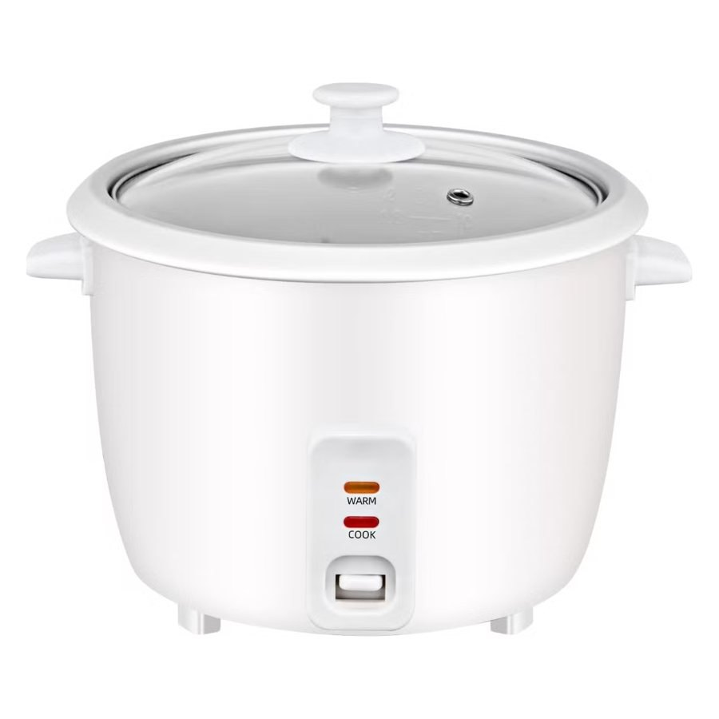

Home / Household & kitchen / Electric kettle 1.7 l, stainless steel, auto shut-off and boil-dry protection

Household & kitchen
Electric kettle 1.7 l, stainless steel, auto shut-off and boil-dry protection
1.7-litre stainless-steel kettle with auto shut-off and dry-boil protection for the household.
The cordless kettle holds 1.7 litres and brings water to the boil quickly at high power. Auto shut-off and boil-dry protection are the safety-critical core functions; for a mains-powered device a cleanly finished rust-free water path, a limescale filter and a stable 360-degree base also count.
Technical data
| Capacity | 1.7 l |
|---|---|
| Safety | Auto shut-off and boil-dry protection |
| Customs tariff number (HS) | 85161080 |
EU standards and regulations
LVD 2014/35/EU, EN 60335-2-15Low voltage: appliances for heating liquidsEMV 2014/30/EUElectromagnetic compatibilityRoHS 2011/65/EURestriction of hazardous substances in electrical equipmentElektroG / WEEERegistration with stiftung ear, take-back obligationVO (EG) 1935/2004 / LFGBFood contact of the water pathGPSR (EU) 2023/988General product safety, EU responsible person required
Goes well with
Instant noodles, braised beef flavour (bag, approx. 105 g)Bagged instant noodles with beef seasoning as a quick hot meal for the site, only hot water needed.
Instant coffee 3-in-1 (sticks / bag)Soluble coffee mix of coffee, dairy ingredients and sugar for break rooms, site tea kitchens and canteens.
Jasmine pearl tea 'Dragon Pearls' (hand-rolled green tea, 100 g tin/bag)Hand-rolled jasmine tea pearls made from young buds and scented with jasmine blossoms: the premium tier above loose jasmine green tea.
More products in this category
Reusable silicone liner for air fryers (round, with divider)Reusable, collapsible silicone liner that replaces parchment in the air fryer and keeps the basket clean.
External vacuum sealer (bag sealer, approx. 110-120 W, dry/moist modes)Compact vacuum sealer for bags and rolls with dry/moist programmes for freshness, meal prep and freezing.
Mini bag sealer (rechargeable, USB-C, with cutting blade)
Glass food storage set (borosilicate, airtight lids, oven and microwave safe)Stackable borosilicate glass containers with airtight lid for fridge, microwave, oven and freezer.
Digital kitchen scale (5 kg / 1 g, stainless steel or bamboo, USB-C)
Kitchen knife set with wooden block, 7 pieces, stainless steelSeven-piece knife set with a wooden block and rust-resistant stainless-steel blades for home kitchens.
Frying pan 28 cm, aluminium, ceramic non-stick coating, induction compatibleLight aluminium pan with a ceramic non-stick coating and an induction base.
Cordless handheld vacuum 18 V, brushless motorCompact cordless handheld vacuum with an 18 V battery and a detachable dust cup.
Clothes drying rack, steel, foldable, powder-coatedFoldable drying rack made of powder-coated steel for indoor laundry drying.
Enamelled cast iron casserole 2.7 lEnamelled cast iron casserole 2.7 l - standard household item.

Serrated stainless steel bread knife 25 cmSerrated stainless steel bread knife 25 cm - standard household item.

Electric rice cooker 1.8 lElectric rice cooker 1.8 l - standard household item.

Aluminium moka pot, 3 cups (300 ml)Aluminium moka pot, 3 cups (300 ml) - standard household item.
Bamboo drawer organiser for cutlery and utensilsBamboo drawer organiser for cutlery and utensils - standard household item.
Stainless steel 304 bento lunch box with compartmentsStainless steel 304 bento lunch box with compartments - standard household item.

Metal countertop spice rack, 2 tiersMetal countertop spice rack, 2 tiers - standard household item.

Stainless steel 304 soup ladleStainless steel 304 soup ladle - standard household item.